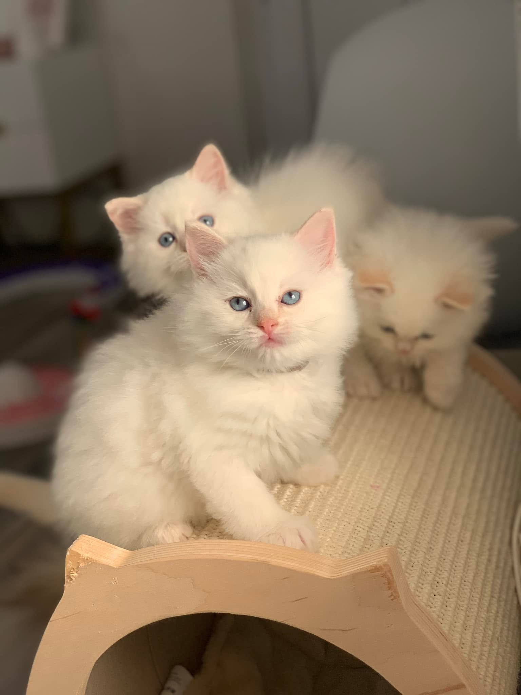
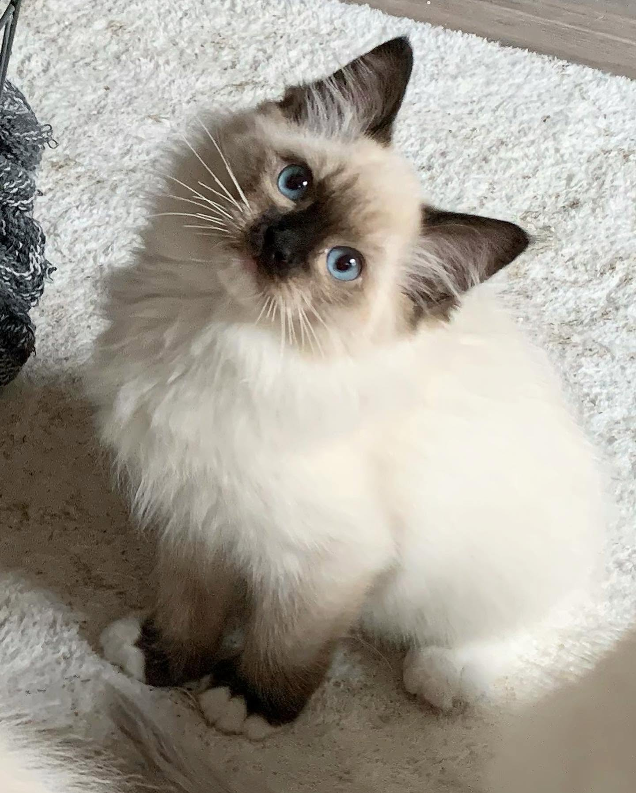
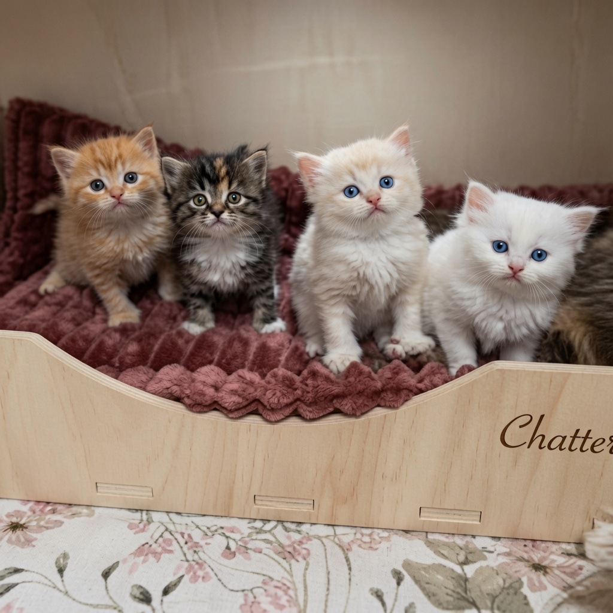

Affectueux
Il apprécie la présence humaine et aime partager le quotidien de sa famille, sans être brusque ni envahissant.
Le Ragdoll est un chat doux, affectueux et apaisant. Connu pour son tempérament calme et sa grande proximité avec sa famille, il séduit autant par sa beauté que par sa présence délicate au quotidien.

Un compagnon tendre, présent et très attaché à sa famille.
Le Ragdoll est souvent recherché pour son tempérament équilibré. C’est un chat qui aime la présence, les moments calmes et les liens forts avec son foyer.
Il apprécie la présence humaine et aime partager le quotidien de sa famille, sans être brusque ni envahissant.
Sa douceur naturelle en fait un compagnon apaisant, qui aime les environnements stables et rassurants.
Bien accompagné dès son plus jeune âge, il peut devenir très à l’aise dans une vie de famille.
Le Ragdoll crée souvent une vraie relation avec ses humains, avec beaucoup de tendresse.


Le Ragdoll n’est pas seulement apprécié pour son apparence. C’est une race qui demande de l’attention, une présence bienveillante et un cadre de vie sécurisant.
Il convient particulièrement aux familles qui souhaitent un chat proche, doux, habitué aux interactions et intégré à la vie quotidienne.
Le Ragdoll est reconnaissable à son allure élégante, son regard expressif, sa fourrure mi-longue et sa présence très douce. Ses robes et marquages peuvent varier selon les lignées et les mariages.
Voir les couleurs et variétésDes yeux intenses qui participent à toute la douceur de la race.
Une robe mi-longue, élégante, qui demande un entretien régulier.
Couleurs, patrons et marquages permettent une grande diversité.
Même s’il est doux et calme, le Ragdoll reste un chat qui a besoin d’attention, d’un environnement enrichi, d’une alimentation adaptée et d’un suivi sérieux.
Le Ragdoll aime la compagnie. Il a besoin d’une famille présente, attentive et prête à lui offrir du temps, de la douceur et des interactions positives.
Sa fourrure demande un brossage régulier pour conserver son confort et éviter les nœuds.
Arbres à chat, jeux, espaces en hauteur et coins douillets participent à son équilibre.
Un suivi vétérinaire, une alimentation adaptée et une surveillance attentive sont essentiels.
Le départ du chaton doit être préparé pour qu’il arrive sereinement dans sa nouvelle famille.
La Chatterie Berceau Étoilé accompagne chaque famille afin de trouver le chaton le plus adapté à son foyer, son rythme de vie et ses attentes.